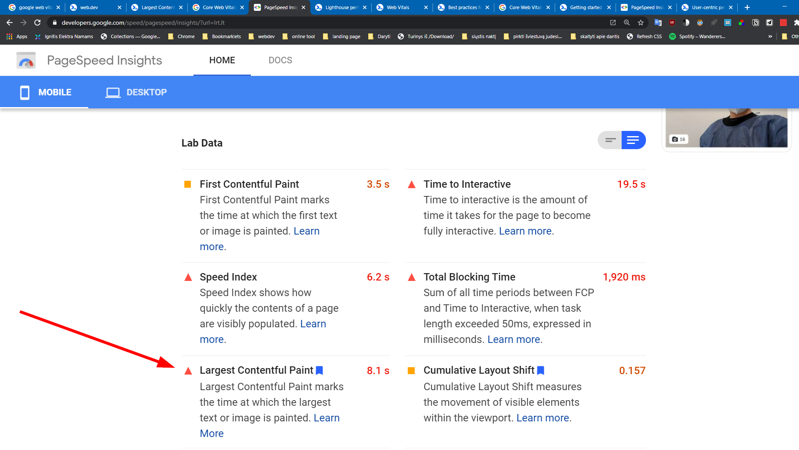

Loading performance — Largest Contentful Paint (LCP)
Largest Contentful Paint (LCP)

Užduotis:
Historically, it's been a challenge for web developers to measure how quickly the main content of a web page loads and is visible to users.
Kas tai yra:
The Largest Contentful Paint (LCP) metric reports the render time of the largest image or text block visible within the viewport.
Largest Contentful Paint (LCP) is an important, user-centric metric for measuring perceived load speed because it marks the point in the page load timeline when the page's main content has likely loaded—a fast LCP helps reassure the user that the page is useful.
Koks LCP dydis rekomenduotinas:
What is a good LCP score?
To provide a good user experience, sites should strive to have Largest Contentful Paint occur within the first 2.5 seconds of the page starting to load. To ensure you're hitting this target for most of your users, a good threshold to measure is the 75th percentile of page loads, segmented across mobile and desktop devices.
Kaip buvo Loading performance matuoti pasirinktas LCP:
Sometimes simpler is better. Based on discussions in the W3C Web Performance Working Group and research done at Google, we've found that a more accurate way to measure when the main content of a page is loaded is to look at when the largest element was rendered.
Kaip matuojamas LCP
LCP can be measured in the lab or in the field, and it's available in the following tools:
Field tools
- Chrome User Experience Report
- PageSpeed Insights
- Search Console (Core Web Vitals report)
- web-vitals JavaScript library
Lab tools
Išbandyti matavimo būdai:
- Chrome'o extension'as Web Vitals
-
Field Data:
- PageSpeed Insights
-
- Field Data:
- Lab Data: 
Kitos, ne tokios tikslios, Loading performance matuojančios charakteristikos
Older metrics like load or DOMContentLoaded are not good because they don't necessarily correspond to what the user sees on their screen. And newer, user-centric performance metrics like First Contentful Paint (FCP) only capture the very beginning of the loading experience. If a page shows a splash screen or displays a loading indicator, this moment is not very relevant to the user.
In the past we've recommended performance metrics like First Meaningful Paint (FMP) and Speed Index (SI) (both available in Lighthouse) to help capture more of the loading experience after the initial paint, but these metrics are complex, hard to explain, and often wrong—meaning they still do not identify when the main content of the page has loaded.
For example, the metrics Time to First Byte (TTFB) and First Contentful Paint (FCP) are both vital aspects of the loading experience, and are both useful in diagnosing issues with LCP (slow server response times or render-blocking resources, respectively).
Kitos Web Vitals charakteristikos–metrics, susijusios su LCP.
Interactivity — First Input Delay (FID)

First Input Delay (FID): measures interactivity. To provide a good user experience, pages should have a FID of less than 100 milliseconds.
Kitos Web Vitals charakteristikos–metrics, susijusios su FID.
Similarly, metrics like Total Blocking Time (TBT) and Time to Interactive (TTI) are lab metrics that are vital in catching and diagnosing potential interactivity issues that will impact FID. However, they are not part of the Core Web Vitals set because they are not field-measurable, nor do they reflect a user-centric outcome.
Visual stability — Cumulative Layout Shift (CLS)

Cumulative Layout Shift (CLS): measures visual stability. To provide a good user experience, pages should maintain a CLS of less than 0.1.